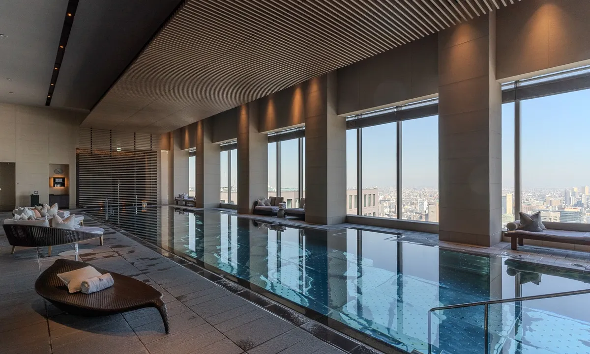
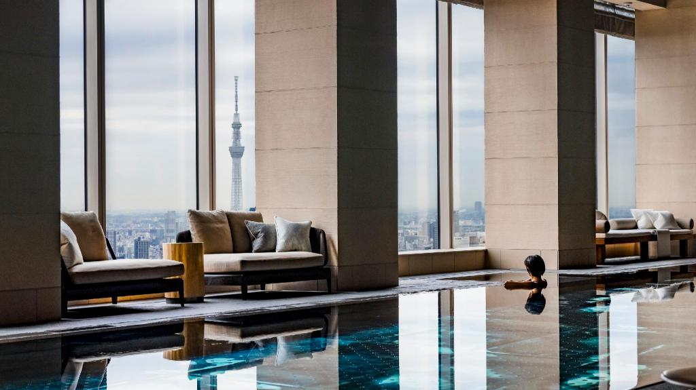
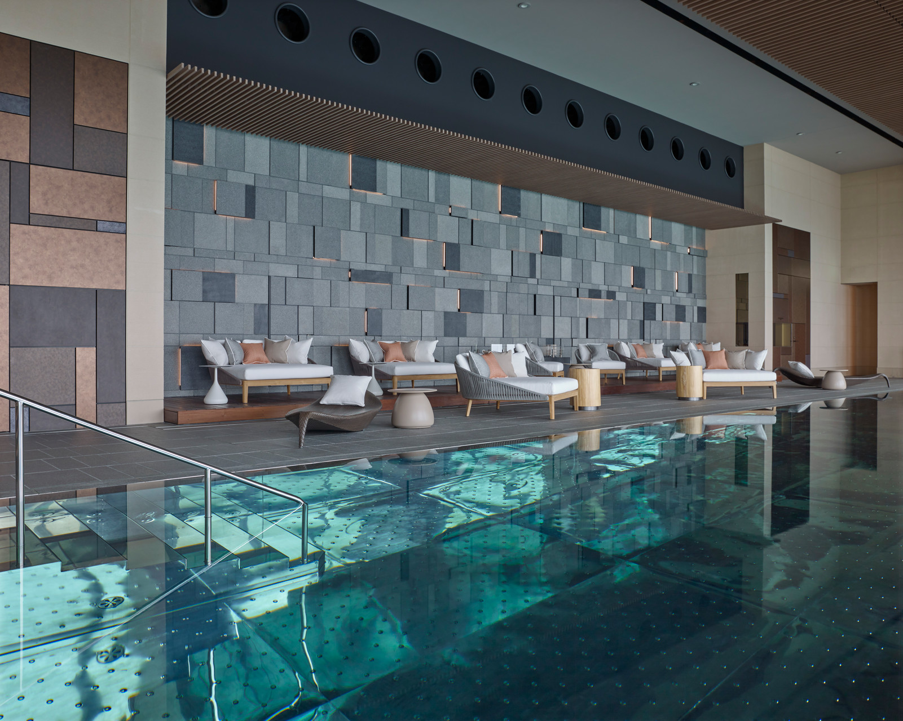

Tokyo Favorite
Four Seasons Otemachi is the Tokyo stay I would use when views, ease, and polish all matter.
Four Seasons Hotel Tokyo at Otemachi gives you a very easy luxury answer: big city views, Imperial Palace proximity, polished service, and the comfort level that makes Four Seasons so useful for families, couples, and business-luxury travelers. It does not need to be mysterious. It works because it is smooth.
What makes it unique
It pairs Tokyo skyline drama with one of the easiest service models in luxury travel.
This is the hotel I would use when the client wants beauty and convenience in equal measure. The views over the Imperial Palace are a major part of the stay, and the hotel has enough dining, wellness, and polished public space to support a full Tokyo itinerary.
Best For
Views and ease
Great for clients who want an elevated Tokyo stay without sacrificing comfort, clarity, or service consistency.
Known For
Pool and dining
The indoor pool, spa, Pigneto, est, and Virtu give the hotel a strong day-to-night rhythm.
Stay
190 rooms and suites
A polished room count with strong suite options and views that make mornings feel special.
Client Type
Couples and families
Especially useful for travelers who want refined Tokyo with fewer logistical questions.



Rooms and suites
Rooms and suites are contemporary, comfortable, and view-driven. This is a strong hotel for clients who want a high-floor Tokyo perspective, especially if they care about waking up to skyline or Imperial Palace views. Suite categories are a good move for families or travelers who want more space between dining, touring, and downtime.
Dining and wellness
Pigneto gives the hotel an easy Italian option, est brings a refined French-Japanese dining point of view, and Virtu works for cocktails and a more polished evening start. The spa and indoor pool are important here, especially for longer Tokyo stays when clients need a calm reset after full days in the city.
My honest take
Four Seasons Otemachi is not the most mysterious Tokyo hotel, and that is part of the appeal. It is reliable, beautiful, polished, and easy to use. For a lot of clients, that is exactly what luxury should feel like.